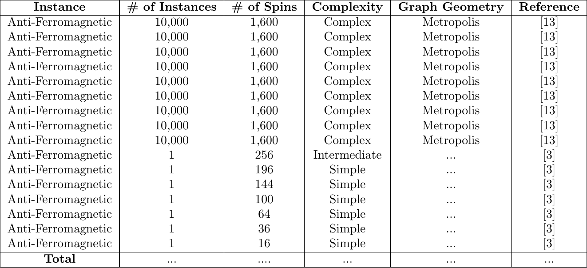

Anti-Ferromagnetic Dataset
Description of Ising Model Type
In an anti-ferromagnetic Ising model, neighboring spins want to anti-align. In other words, they want to point in the opposite directions to minimize the system’s energy. The energy configuration of this model can be given by
If the neighboring spins point in the same direction, the energy of the system will increase and, conversely arranged, will decrease.
Instances
The instances we are providing for the anti-ferromagnetic Ising model type consist of weighted edges. Note that there are only negative weights present for these instances. The complexity of an instance is determined by its size (# of nodes).
2D Instances
Dataset References
Below contain the references to the datasets we gathered on this website.
[3] Finding the Ground State of Spin Hamiltonians with Reinforcement Learning
Citation: Mills, K., Ronagh, P. & Tamblyn, I. Finding the ground state of spin Hamiltonians with reinforcement learning. Nat Mach Intell 2, 509–517 (2020). https://doi.org/10.1038/s42256-020-0226-x
This paper demonstrates that an RL agent is able to surpass the performance of standard heuristic temperature schedule for two classes of Hamiltonians. They show the performance of their implementation by training on weak-strong clusters (bipartite graph with two fully connected clusters) and nearest-neighbor square spin glasses.
[13] A high-bias, low-variance introduction to Machine Learning for physicists
Citation: P. Mehta, M. Bukov, C.-H. Wang, A.G. Day, C. Richardson, C.K. Fisher, D.J. Schwab. A high-bias, low-variance introduction to machine learning for physicists. Physics Reports, 810 (2019), pp. 1-124, 10.1016/j.physrep.2019.03.001
This textbook introduces Machine Learning and its applications towards physics problems and research. Within the textbook, contains an Ising model dataset of locally-connected 2D Ising models.